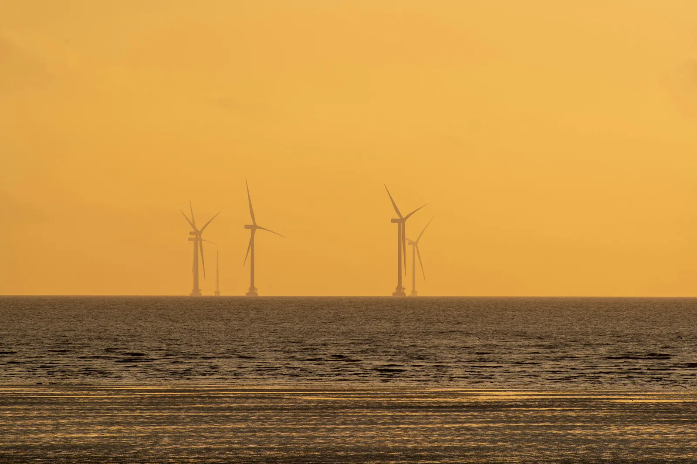

Power: $P = \Delta E/\Delta t$
Why can you not work out an electricity bill from the power of a device alone?
Prior knowledge
- Energy is measured in joules, and it is transformed from one form to anotherchapter Energy transformations and the joule
- Energy is neither created nor destroyedchapter Forms of energy and conservation of energy
Core path: follow the steps in order. Besides calculations, the core path includes investigations, explanations and graphs. Tasks marked Optional give extra practice. Optional tasks: 5.
Think about it
In the kitchen a kettle hums and the water heats up in a couple of minutes. At the same time a small lamp is on in the hallway, and nobody needs its light. The reading of the electricity meter rises because of both, but it rises clearly faster because of the kettle. Still, the lamp is often on for hours, while the kettle is on only for a moment.
Which uses more electrical energy, a device that works fast or a device that is on for a long time, and how can you compare them?
Optional Review: energy and the joule
Predict
Make your predictions before investigating 1 question
Prediction: how long the lamp has to burn
Investigate
Simulation
How to use
Choose devices A and B from the menus and set the usage time of each with the slider in steps of one minute, up to a day, that is $1440\,\text{min}$. The disc of the energy meter turns faster the greater the power of the device. The graph shows the energy of each device as a function of time: the solid line ends at the usage time of the device, and the dashed line continues the same straight line. The readings give the energy in joules and in kilowatt-hours. The speed only changes how fast the discs turn.
Assumptions of the model
The powers of the devices are typical rounded values from the table in the chapter, not measurements of any particular device: lamp $10\,\text{W}$, television $80\,\text{W}$, refrigerator $100\,\text{W}$, toaster $1000\,\text{W}$, hair dryer $1800\,\text{W}$, kettle $2000\,\text{W}$ and electric sauna heater $8000\,\text{W}$. The model assumes that a device runs at a constant power for the whole usage time. A real refrigerator runs only part of the time, and the thermostat of a sauna heater or a kettle switches the current off now and then. The disc of the energy meter turns like in old electricity meters: the same number of turns for every kilowatt-hour. The readings of the simulation are values of the model, not measurements.
How the calculation works
When a device runs at a constant power $P$ for a time $t$, it transforms the energy $E = P\,t$. The simulation first converts minutes to seconds, $1\,\text{min} = 60\,\text{s}$, and the kilowatt-hours are obtained by substituting $1\,\text{kWh} = 3\,600\,000\,\text{J}$. The slope of the line in the graph is the power: every hour the energy grows by $P \cdot 1\,\text{h}$.
Compare the energy meters and the graph lines of two devices: which one transforms energy faster, and which one transforms more?
Experiment 1: lamp and hair dryer
Test the prediction. Device A is a hair dryer ($1800\,\text{W}$) that is on for $5\,\text{min}$. Device B is a lamp ($10\,\text{W}$). Change only the usage time $t_\text{B}$ of the lamp and record at least three measurements: one where the energy $E_\text{B}$ of the lamp is smaller than the energy $E_\text{A}$ of the dryer, one where it is greater, and one where they are equal. Fine-tune the time with the arrow keys one minute at a time if needed. Look at the graph too.
Initial state: device $A$: hair dryer, usage time $t_\text{A}$ = $5\,\text{min}$, device $B$: lamp, usage time $t_\text{B}$ = $60\,\text{min}$. Kept constant: device $A$, usage time $t_\text{A}$, device $B$. Varied: usage time $t_\text{B}$.
| usage time $t_\text{B}$ | $E_\text{A}\ (\text{kJ})$ | $E_\text{B}\ (\text{kJ})$ |
|---|
How long does the lamp have to burn to transform the same amount of energy as the hair dryer in five minutes? Answer in hours.
Hint 1: a guiding question
Find the row in the table where $E_\text{B}$ equals $E_\text{A}$, and read the usage time $t_\text{B}$ of the lamp in minutes from it.
Hint 2: what is the connection
The time on the slider is in minutes. Convert to hours by substituting
Hint 3: an intermediate step
By calculation: the energy of the dryer is
and the lamp needs the time $t = E : P$ for the same energy.
Show the solution
Given
power of the hair dryer $P_\text{A} = 1800\,\text{W}$ and usage time $t_\text{A} = 5.0\,\text{min}$; power of the lamp $P_\text{B} = 10\,\text{W}$ (typical powers of the model). In the table $E_\text{B} = E_\text{A} = 540\,\text{kJ}$ when $t_\text{B} = 900\,\text{min}$.
Find
usage time $t_\text{B}$ of the lamp in hours when $E_\text{B} = E_\text{A}$
Principle
Both devices run at a constant power, so each transforms the energy $E = P\,t$. First we calculate the energy of the dryer, then the time in which the lamp transforms the same energy.
Formula
Conversions
Substitute $1\,\text{min} = 60\,\text{s}$:
Finally substitute $1\,\text{h} = 3600\,\text{s}$, that is
Substitution
Answer
$t_\text{B} = 15\,\text{h}$
Two significant figures like the power of the lamp $10\,\text{W}$ and the usage time $5.0\,\text{min}$. The same result can be read from the table of the simulation: $900\,\text{min} = 900 \cdot \dfrac{1}{60}\,\text{h} = 15\,\text{h}$.
Reasonableness
The power of the lamp is $1800 : 10 = 180$ times smaller than that of the dryer, so transforming the same energy takes $180$ times as long: $180 \cdot 5.0\,\text{min} = 900\,\text{min}$. In the graph the gentle line of the lamp reaches the height of the dryer's point only much later.
More to investigate 3 tasks
Energy meter readings
Values calculated by a model · Calculated from the appliances' rated powers (kettle $2000\,\text{W}$, toaster $1000\,\text{W}$, television $80\,\text{W}$); example data, not a measurement.
An energy meter is connected to three devices, and the reading is recorded every $20\,\text{s}$. The table shows the meter reading in kilojoules ($\text{kJ}$) after the device is switched on.
| $t$ (s) | kettle | toaster | television |
|---|---|---|---|
| $0$ | $0$ | $0$ | $0$ |
| $20$ | $40$ | $20$ | $1.6$ |
| $40$ | $80$ | $40$ | $3.2$ |
| $60$ | $120$ | $60$ | $4.8$ |
The reading grows steadily. Plotted against time, the readings form a straight line whose steepness can be read from the table.
Optional Experiment 2: the kilowatt-hour
Device A is a kettle ($2000\,\text{W}$). Change only its usage time $t_\text{A}$ and record at least three measurements. Look at the energy $E_\text{A}$ in kilowatt-hours.
Initial state: device $A$: kettle, usage time $t_\text{A}$ = $10\,\text{min}$, device $B$: lamp, usage time $t_\text{B}$ = $60\,\text{min}$. Kept constant: device $A$, device $B$, usage time $t_\text{B}$. Varied: usage time $t_\text{A}$.
| usage time $t_\text{A}$ | $E_\text{A}\ (\text{kWh})$ |
|---|
For how many minutes does the kettle have to be on to transform exactly $1\,\text{kWh}$ of energy? Answer in minutes.
Hint 1: a guiding question
Use the slider to find the usage time at which $E_\text{A} = 1\,\text{kWh}$, or calculate it.
Hint 2: what is the connection
When the power is in kilowatts and the time in hours, $E = P\,t$ gives kilowatt-hours directly. Solve $t = E : P$.
Hint 3: an intermediate step
Finally convert to minutes.
Show the solution
Given
power of the kettle $P = 2000\,\text{W}$ (typical power of the model) and energy $E = 1\,\text{kWh}$
Find
usage time $t$ in minutes
Principle
The kettle runs at a constant power, so the energy is power times time. When the power is in kilowatts and the energy in kilowatt-hours, the time is obtained in hours.
Formula
$E = P\,t$, from which $t = \dfrac{E}{P}$
Conversions
Substitute $1\,\text{W} = 10^{-3}\,\text{kW}$:
Finally substitute $1\,\text{h} = 60\,\text{min}$.
Substitution
Answer
$t = 30\,\text{min}$
Two significant figures like the power $2.0\,\text{kW}$. In the table of the simulation $E_\text{A} = 1\,\text{kWh}$ when $t_\text{A} = 30\,\text{min}$.
Reasonableness
A kilowatt-hour is the energy that a $1\,\text{kW}$ device transforms in an hour. The power of the kettle is double that, so it takes half an hour.
Conclusion: power and time
Write, based on your measurements and the graph: why can a $10\,\text{W}$ lamp transform more energy than a $1800\,\text{W}$ hair dryer? How do power and time together determine the energy transformed?
Model answer
Power tells how much energy is transformed per second: $1800\,\text{J}$ for the dryer and $10\,\text{J}$ for the lamp. The energy transformed is power times time, so a small power is enough when there is a lot of time. In the experiment the dryer transformed $540\,\text{kJ}$ in five minutes, and the energy of the lamp was equal when $t_\text{B} = 900\,\text{min} = 15\,\text{h}$. With a longer usage time the lamp transforms more: in a day $864\,\text{kJ}$. In the graph the line of the lamp is gentle because the power is small, but it continues a long way. The numbers are values of the simulation model calculated from rated powers, not measurements.
Assess your own answer
Tick the points your own answer already contains.
Theory
Key idea
When a device transforms energy, two things matter: how much energy is transformed and how fast. A kettle transforms electrical energy into heat very quickly, so the water heats up in minutes. A small lamp transforms electrical energy into light and heat slowly.
How fast energy is transformed or transferred is called power. Power is energy per unit of time: if a device transforms $2000\,\text{J}$ every second, its power is $2000\,\text{J/s} = 2000\,\text{W}$.
Power does not tell you how much energy a device uses in total. For that you need power together with time: a low power for a long time can transform the same energy as a high power for a short moment. This is why an electricity bill depends on both the power of the device and how long it is used.

Power
Power is the quotient of the energy transformed or transferred and the time it takes:
$$P = \frac{\Delta E}{\Delta t}$$
where $P$ is power (W), $\Delta E$ is the amount of energy transferred or transformed during the time interval considered (J), and $\Delta t$ is the length of that interval (s). In words: power is energy divided by time. If energy is transformed unevenly, the formula gives the average power over the time interval $\Delta t$. When a device runs steadily from the moment it is switched on, $\Delta E$ is the whole transformed energy $E$ and $\Delta t$ is the whole time $t$, so $P = E : t$. Energy and time can be solved from the formula:
$$\begin{aligned} E &= P\,t \\ t &= \frac{E}{P} \end{aligned}$$
The unit of power is the watt: $1\,\text{W} = 1\,\text{J/s}$. Prefixes work as with other quantities (chapter Quantities, units and the SI system): $1\,\text{kW} = 1000\,\text{W}$ and $1\,\text{MW} = 10^{6}\,\text{W}$. The power of power plants is measured in megawatts: the electrical power of the Olkiluoto 3 nuclear power unit is about $1600\,\text{MW}$ (TVO), as much as about $800\,000$ kettles.
If a device transforms energy steadily, energy as a function of time is a straight line starting from the origin. The slope of the line is the power: the greater the power, the more steeply the energy grows. In the figure, on the kettle's line the energy grows by $40\,\text{kJ}$ in a time interval of $20\,\text{s}$. Substituting $1\,\text{kJ} = 1000\,\text{J}$: $40\,\text{kJ} = 40 \cdot 1000\,\text{J} = 40\,000\,\text{J}$, so $P = 40\,000\,\text{J} : 20\,\text{s} = 2000\,\text{W}$.
Kilowatt-hour
Electrical energy is billed in kilowatt-hours (kWh). One kilowatt-hour is the energy that a device with a power of $1\,\text{kW}$ transforms in one hour. In joules, an hour is $3600\,\text{s}$ and a kilowatt is $1000\,\text{W}$, so
$$\begin{aligned} 1\,\text{kWh} &= 1000\,\text{W} \cdot 3600\,\text{s}\\ &= 3\,600\,000\,\text{J} \end{aligned}$$
A kilowatt-hour is therefore a unit of energy, not of power. The formula $E = P\,t$ gives kilowatt-hours directly when power is in kilowatts and time in hours: $\text{kW} \cdot \text{h} = \text{kWh}$.
Typical powers and the electricity bill
The table shows typical powers of household appliances, rounded from the typical values given by manufacturers. The power of a real appliance is on its rating plate. The power of a refrigerator is the power while its compressor runs, and the compressor does not run all the time.
| Appliance | Power |
|---|---|
| LED lamp | $8\,\text{W}$ |
| laptop | $50\,\text{W}$ |
| television | $80\,\text{W}$ |
| refrigerator | $100\,\text{W}$ |
| hair dryer | $1800\,\text{W}$ |
| kettle | $2000\,\text{W}$ |
| electric sauna heater | $8\,\text{kW}$ |
Many appliances use energy even when they seem to be switched off. The standby power is typically from less than a watt to a few watts per appliance. This is small, but standby lasts all $8760\,\text{h}$ of the year.
An electricity bill is the energy consumed times the unit price. In this chapter we use the round example price $20\,\text{c/kWh}$, that is $0.20\,\text{€/kWh}$. This is the order of magnitude of the total price of household electricity in 2025 (Statistics Finland 2025: about $18\,\text{c/kWh}$ as a total price, when energy, transmission and taxes are added together); the example price is rounded up. The real price varies with the contract and the time of year.
Common misconception
Many people think that a high power means high energy consumption. Power only tells the rate: the energy consumed is power times time. A hair dryer ($1800\,\text{W}$) runs for five minutes and consumes $0.15\,\text{kWh}$, but a $10\,\text{W}$ lamp that is on for a day consumes $0.24\,\text{kWh}$. Another mistake is to mix up the units: the watt is the unit of power and the kilowatt-hour the unit of energy, so "the power is $2\,\text{kWh}$" is wrong: the correct statement is that the power is $2\,\text{kW}$.
Summary
- Power tells how fast energy is transformed or transferred: $P = \tfrac{\Delta E}{\Delta t}$. The unit is the watt, $1\,\text{W} = 1\,\text{J/s}$.
- At steady power $E = P\,t$ and $t = E : P$. In an energy–time graph the slope of the line is the power.
- $1\,\text{kWh} = 1000\,\text{W} \cdot 3600\,\text{s} = 3.6\,\text{MJ}$. The kilowatt-hour is a unit of energy, and an electricity bill is the energy in kWh times the unit price.
- A high power for a short time and a low power for a long time can use the same amount of energy; standby consumes energy all the time.
Optional Return to your prediction
Compare your prediction with the numbers $E = P\,t$. What does power tell and what does it not tell? Return to the opening question: why can you not work out an electricity bill from the power alone?
Would you change your prediction?
Examples
Once you have studied the chapter's theory, move on to the guided examples. In the first you follow a worked solution step by step; in the next ones you make the choices yourself, and the hints help if you get stuck.
Example 1: Electricity bill of a TV
The power of a television is $80\,\text{W}$, and it is on for $4.0\,\text{h}$ a day for $30\,\text{days}$. How much does watching television cost in a month when the price of electricity is $20\,\text{c/kWh}$?
Step 1/7
Given and find. Power $P = 80\,\text{W}$, usage time $4.0\,\text{h}$ a day for $30\,\text{days}$ and price $20\,\text{c/kWh}$. We want the cost of electricity for the month.
Step 2/7
Principle. The television transforms energy at a steady power, so the energy consumed is power times time. The cost is found by multiplying the energy in kilowatt-hours by the unit price.
Step 3/7
Rearranged formula. The energy is $E = P\,t$ and the cost is the energy times the unit price:
$$\begin{aligned} E &= P\,t \\ \text{cost} &= E \cdot \text{unit price} \end{aligned}$$
Step 4/7
Unit conversions. For kilowatt-hours the power must be in kilowatts. Substitute $1\,\text{W} = 10^{-3}\,\text{kW}$:
The total time is $4.0\,\text{h} \cdot 30 = 120\,\text{h}$. The cost comes out in cents, and we convert to euros by substituting $1\,\text{c} = 0.01\,\text{€}$.
Step 5/7
Substitution. $$\begin{aligned} E &= P\,t \\ &= 0.080\,\text{kW} \cdot 120\,\text{h} \\ &= 9.6\,\text{kWh} \\ \text{cost} &= E \cdot \text{unit price} \\ &= 9.6\,\text{kWh} \cdot 20\,\text{c/kWh} \\ &= 192\,\text{c} \\ &= 192 \cdot 0.01\,\text{€} \\ &= 1.92\,\text{€} \end{aligned}$$
Step 6/7
Result. Watching television costs about $1.9\,\text{€}$ a month. The result is given with two significant figures because the power and the daily usage time are given with two figures.
Step 7/7
Reasonableness. One kilowatt-hour covers an $80\,\text{W}$ television for about $12\,\text{h}$, and in a month we watch for $120\,\text{h}$, which is about ten kilowatt-hours. That costs about ten times $20\,\text{c}$, which is about two euros.
Optional Example 2: Find the error
Example 3: Standby for a year
A television and a game console are on standby with a total power of $2.5\,\text{W}$ for the whole year, $365\,\text{days}$.
How much energy does this consume in a year? Give the answer in kilowatt-hours.
Hint 1: a guiding question
Is the power constant? How many hours are there in a year?
Hint 2: what is the connection
Use $E = P\,t$. Convert the power to kilowatts so that the result comes out in kilowatt-hours.
Hint 3: an intermediate step
$E = 0.0025\,\text{kW} \cdot 8760\,\text{h}$.
Show the solution
Given
power $P = 2.5\,\text{W}$ (constant), time $365\,\text{days}$
Find
energy $E$ in kilowatt-hours
Principle
The standby power is steady, so the energy transformed is power times time.
Formula
$E = P\,t$
Conversions
(substituting $1\,\text{W} = 10^{-3}\,\text{kW}$) and
Substitution
Answer
$22\,\text{kWh}$
Two significant figures as in the power $2.5\,\text{W}$.
Reasonableness
In a day about
is consumed, and in $365\,\text{days}$ about $22\,\text{kWh}$. The cost would be about $22 \cdot 0.20\,\text{€} \approx 4.4\,\text{€}$: small but pointless.
Review the chapter's concepts
Cards you mark Review later collect in your review deck.
- Power
- How fast energy is transferred or transformed.$$P = \dfrac{\Delta E}{\Delta t}$$
- Watt
- The SI unit of power, one joule per second.
- Input power
- How fast a device takes energy from its energy source.
- Output power
- How fast a device transfers energy to its intended purpose.
- Energy consumption
- The energy used in a given time can be calculated from the power.$$E = P\Delta t$$
- Kilowatt-hour
- The energy transferred at a power of one kilowatt in one hour.
- Rating plate
- A label on a device that shows for example the power it takes from the grid.
- Price of electricity
- The cost of the electrical energy used is the number of kilowatt-hours times the price per kilowatt-hour.
Exercises
Level 1 · basic practice 8 exercises
One formula or one step of reasoning. Core exercises first, the rest is extra practice.
- Exercise 3-1Core
A kettle transforms $1.80 \cdot 10^{5}\,\text{J}$ of electrical energy in $90.0\,\text{s}$. Calculate the power of the kettle.
Answer
$2000\,\text{W}$
Show the solution
Given
energy $E = 1.80 \cdot 10^{5}\,\text{J}$, time $t = 90.0\,\text{s}$
Find
power $P$ in watts
Principle
Power is the quotient of the energy transformed and the time it takes. The kettle transforms energy steadily, so the whole energy and the whole time are enough.
Formula
$P = \dfrac{E}{t}$
Conversions
Not needed: the energy is in joules and the time in seconds, so the result comes out in the unit $\text{J/s} = \text{W}$.
Substitution
$P$$= \dfrac{1.80 \cdot 10^{5}\,\text{J}}{90.0\,\text{s}}$$= 2000\,\text{J/s}$$= 2000\,\text{W}$Answer
$2000\,\text{W}$
(that is $2.00 \cdot 10^{3}\,\text{W}$), three significant figures as in the given values.
Reasonableness
With rounded numbers $200\,000\,\text{J} : 100\,\text{s} = 2000\,\text{W}$. The typical power of a kettle is about $2\,\text{kW}$, so the result fits.
- Exercise 3-2
The power of an LED lamp is $8.0\,\text{W}$. How much energy does the lamp transform in $5.0\,\text{s}$?
Answer
$40\,\text{J}$
Show the solution
Given
power $P = 8.0\,\text{W}$, time $t = 5.0\,\text{s}$
Find
energy $E$ in joules
Principle
The lamp transforms energy at a steady power, so the energy is power times time.
Formula
$P = \dfrac{E}{t}$, from which $E = P\,t$
Conversions
Not needed: $1\,\text{W} = 1\,\text{J/s}$, so a watt times a second is a joule.
Substitution
$E$$= 8.0\,\text{W} \cdot 5.0\,\text{s}$$= 40\,\text{J}$Answer
$40\,\text{J}$
Two significant figures as in the given values.
Reasonableness
The lamp transforms $8\,\text{J}$ every second, and in five seconds five times as much, which is $40\,\text{J}$. The unit is the joule, a unit of energy.
- Exercise 3-3
The power of a microwave oven is $1200\,\text{W}$. How long does it take for the oven to transform $72\,000\,\text{J}$ of energy?
Answer
$60\,\text{s}$
Show the solution
Given
power $P = 1200\,\text{W}$, energy $E = 72\,000\,\text{J}$
Find
time $t$ in seconds
Principle
The oven transforms energy at a steady power, so the time is the energy divided by the power.
Formula
$P = \dfrac{E}{t}$, from which $t = \dfrac{E}{P}$
Conversions
Not needed:
$\text{J} : \text{W}$$= \text{J} : (\text{J/s})$$= \text{s}$Substitution
$t$$= \dfrac{72\,000\,\text{J}}{1200\,\text{W}}$$= 60\,\text{s}$Answer
$60\,\text{s}$
Two significant figures as in the energy $72\,000\,\text{J}$.
Reasonableness
The oven transforms $1200\,\text{J}$ in a second, and $60 \cdot 1200\,\text{J} = 72\,000\,\text{J}$. A minute is a typical heating time.
- Exercise 3-4
The graph shows the electrical energy transformed by two devices, A and B, as a function of time, and each device transforms energy steadily. Read two points from the line that rises more steeply.
What is the power of this device? Give the answer in watts.
Answer
$1500\,\text{W}$
Show the solution
Given
the lines A and B of the graph, which show the energy $E$ transformed by the devices as a function of time $t$
Find
the power $P$ in watts of the device whose line rises more steeply
Principle
The device transforms energy steadily, so its power is the energy transformed divided by the time, $P = \Delta E : \Delta t$. In the graph this is the slope of the line, so the more steeply rising line A belongs to the device with the greater power.
Reading the graph
Line A passes through the grid points $(40\,\text{s}$; $60\,\text{kJ})$ and $(80\,\text{s}$; $120\,\text{kJ})$. Between these points
$\Delta E$$= 120\,\text{kJ} - 60\,\text{kJ}$$= 60\,\text{kJ}$$\Delta t$$= 80\,\text{s} - 40\,\text{s}$$= 40\,\text{s}$Formula
$P = \dfrac{\Delta E}{\Delta t}$
Conversions
The power comes out in watts when the energy is in joules and the time in seconds:
$60\,\text{kJ}$$= 60 \cdot 1000\,\text{J}$$= 60\,000\,\text{J}$Substitution
$P$$= \dfrac{60\,000\,\text{J}}{40\,\text{s}}$$= 1500\,\tfrac{\text{J}}{\text{s}}$$= 1500\,\text{W}$Answer
$1500\,\text{W}$
That is $1.5\,\text{kW}$, two significant figures, because the values are read from the gridlines to two-digit precision.
Reasonableness
Line A rises $30\,\text{kJ}$ in $20\,\text{s}$, that is $1.5\,\text{kJ} = 1500\,\text{J}$ per second, which is the same result. Line B rises only $40\,\text{kJ}$ in $80\,\text{s}$, so its power is $500\,\text{W}$, a third of the power of A, and its line is less steep. Such a power is typical of a microwave oven.
- Exercise 3-5
The power of a heater is $1.5\,\text{kW}$, and it is on for $2.0\,\text{h}$. How much energy does it consume in kilowatt-hours?
Answer
$3.0\,\text{kWh}$
Show the solution
Given
power $P = 1.5\,\text{kW}$, time $t = 2.0\,\text{h}$
Find
energy $E$ in kilowatt-hours
Principle
The heater transforms energy at a steady power, so the energy is power times time. When the power is in kilowatts and the time in hours, the result comes out directly in kilowatt-hours.
Formula
$E = P\,t$
Conversions
Not needed: $\text{kW} \cdot \text{h} = \text{kWh}$. In joules the result would be
$3.0 \cdot 1000\,\text{W} \cdot 3600\,\text{s}$$\approx 1.1 \cdot 10^{7}\,\text{J}$Substitution
$E$$= 1.5\,\text{kW} \cdot 2.0\,\text{h}$$= 3.0\,\text{kWh}$Answer
$3.0\,\text{kWh}$
Two significant figures as in the given values.
Reasonableness
In one hour $1.5\,\text{kWh}$ is used, so in two hours twice as much, $3.0\,\text{kWh}$. For a heater this is a normal amount.
- Exercise 3-6
Device A transforms energy steadily at a power of $1.0\,\text{kW}$ and device B at a power of $2.0\,\text{kW}$. Which of the following statements is correct?
Answer
Device B transforms twice as much energy every second as device A.
Show the solution
Find
which statement about comparing two devices with different powers is correct.
Principle
Power is the quotient of the transformed energy and time, $P = \Delta E : \Delta t$, so $1\,\text{W} = 1\,\text{J/s}$. Power tells how much energy is transformed per unit of time. The energy consumed also depends on time: $E = P\,t$.
Model answer
Device B transforms twice as much energy every second as device A, because $2.0\,\text{kW} = 2 \cdot 1.0\,\text{kW}$. However, B does not always consume more energy, since energy is power times time and A, if it has been on longer, may have consumed more. A kilowatt is a unit of power; a unit of energy is, for example, the kilowatt-hour, so A consumes $1.0\,\text{kWh}$ in an hour. Power does not tell the total energy consumed.
- Exercise 3-7
A device transforms energy steadily, and the energy $E$ it transforms forms a line starting from the origin as a function of time $t$.
What does the slope of the line tell you about the device?
Answer
The power of the device.
Show the solution
Find
what the slope of an energy–time line starting from the origin tells you.
Principle
The slope of the line is $\Delta E : \Delta t$, and this quotient is power. The device transforms energy steadily, so energy is directly proportional to time and the slope of the line is the same everywhere.
Model answer
The slope tells the power of the device. The more steeply the line rises, the more energy is transformed per second. The slope is not the total energy, because the total energy is read from the height of the line at a given moment. Nor is it time, because time is on the horizontal axis, and the weight of the device cannot be determined from the graph.
- Exercise 3-8
An electric motor transforms $3.6\,\text{MJ}$ of electrical energy in $2.0\,\text{min}$. Calculate the average power of the motor in kilowatts.
Answer
$30\,\text{kW}$
Show the solution
Given
energy $E = 3.6\,\text{MJ}$, time $t = 2.0\,\text{min}$
Find
average power $P$ in kilowatts
Principle
The motor transforms energy steadily, so power is the energy divided by time. The units are first converted to joules and seconds.
Formula
$P = \dfrac{E}{t}$
Conversions
$3.6\,\text{MJ}$$= 3.6 \cdot 10^{6}\,\text{J}$$2.0\,\text{min}$$= 2.0 \cdot 60\,\text{s}$$= 120\,\text{s}$Finally $1\,\text{W} = 10^{-3}\,\text{kW}$.
Substitution
$P$$= \dfrac{3.6 \cdot 10^{6}\,\text{J}}{120\,\text{s}}$$= 30\,000\,\text{J/s}$$= 30\,000\,\text{W}$$= 30\,000 \cdot 10^{-3}\,\text{kW}$$= 30\,\text{kW}$Answer
$30\,\text{kW}$
Two significant figures as in the given data.
Reasonableness
With rounded numbers $4\,\text{MJ} : 100\,\text{s} = 40\,\text{kW}$, so the result is of the right order of magnitude. The power is tens of times the power of a kettle, which suits the motor of an electric car or a small machine.
Level 2 · applied practice 8 exercises
Two steps, working with measured data, a unit conversion or rearranging a formula. Core exercises first, the rest is extra practice.
- Exercise 3-9Core
The power of an electric sauna heater is $6.0\,\text{kW}$, and it is on for $150\,\text{min}$. The price of electricity is $20\,\text{c/kWh}$, that is $0.20\,\text{€/kWh}$.
How much does heating the sauna cost? Give the answer in euros.
Answer
$3.0\,\text{€}$
Show the solution
Given
power $P = 6.0\,\text{kW}$, time $t = 150\,\text{min}$, price $0.20\,\text{€/kWh}$
Find
cost in euros
Principle
The sauna heater transforms energy at a steady power. First we calculate the energy consumed in kilowatt-hours, then its cost.
Formula
$E = P\,t$ and $\text{cost} = E \cdot \text{unit price}$
Conversions
The power is already in kilowatts. Time: $1\,\text{min} = 1\,\text{h} : 60$, so
$150\,\text{min}$$= 150 \cdot (1\,\text{h} : 60)$$= 2.5\,\text{h}$Price $20\,\text{c/kWh} = 0.20\,\text{€/kWh}$.
Substitution
$E$$= 6.0\,\text{kW} \cdot 2.5\,\text{h}$$= 15\,\text{kWh}$$\text{cost}$$= 15\,\text{kWh} \cdot 0.20\,\text{€/kWh}$$= 3.0\,\text{€}$Answer
$3.0\,\text{€}$
Two significant figures as in the power $6.0\,\text{kW}$.
Reasonableness
With rounded numbers $6\,\text{kW} \cdot 2.5\,\text{h} \approx 15\,\text{kWh}$, which costs about $15 \cdot 0.20\,\text{€} = 3.0\,\text{€}$. The cost of a sauna session is of the order of a few euros.
- Exercise 3-10
A phone battery can hold $15\,\text{Wh}$ of energy. Give the energy in joules.
Answer
$54\,000\,\text{J}$
Show the solution
Given
energy of the battery $E = 15\,\text{Wh}$
Find
energy $E$ in joules
Principle
A watt-hour is power times time, so it is a unit of energy. The unit is converted by substituting $1\,\text{W} = 1\,\text{J/s}$ and $1\,\text{h} = 3600\,\text{s}$.
Formula
$E = P\,t$
Conversions
$1\,\text{Wh}$$= 1\,\text{W} \cdot 3600\,\text{s}$$= 3600\,\text{J}$Substitution
$E$$= 15\,\text{Wh}$$= 15 \cdot 3600\,\text{J}$$= 54\,000\,\text{J}$Answer
$54\,000\,\text{J}$
(that is $5.4 \cdot 10^{4}\,\text{J}$), two significant figures as in the given value $15\,\text{Wh}$.
Reasonableness
A joule is a very small unit and a watt-hour a large one, so the numerical value must grow. If the battery is charged full in an hour, the charging power is $54\,000\,\text{J} : 3600\,\text{s} = 15\,\text{W}$, which is a typical charging power. In use a phone consumes about $2\,\text{W}$, so the battery lasts about $15\,\text{Wh} : 2\,\text{W} = 7.5\,\text{h}$.
- Exercise 3-11
A device consumes $0.40\,\text{kWh}$ of energy in $20\,\text{min}$. Calculate the average power of the device in watts.
Answer
$1200\,\text{W}$
Show the solution
Given
energy $E = 0.40\,\text{kWh}$, time $t = 20\,\text{min}$
Find
average power $P$ in watts
Principle
Power is energy divided by time. The units must be joules and seconds for the result to be in watts.
Formula
$P = \dfrac{E}{t}$
Conversions
$0.40\,\text{kWh}$$= 0.40 \cdot 1000\,\text{W} \cdot 3600\,\text{s}$$= 1\,440\,000\,\text{J}$$20\,\text{min}$$= 20 \cdot 60\,\text{s}$$= 1200\,\text{s}$Substitution
$P$$= \dfrac{1\,440\,000\,\text{J}}{1200\,\text{s}}$$= 1200\,\text{J/s}$$= 1200\,\text{W}$Answer
$1200\,\text{W}$
(that is $1.2 \cdot 10^{3}\,\text{W}$), two significant figures as in the given values.
Reasonableness
In a third of an hour $0.40\,\text{kWh}$ is used, so in an hour $3 \cdot 0.40\,\text{kWh} = 1.2\,\text{kWh}$ would be used, which means the power is $1.2\,\text{kW}$. This is a typical power for a small household appliance.
- Exercise 3-12
In a shop six emergency exit lights are on, each at a power of $1.5\,\text{W}$, for the whole year. A year has $8760\,\text{h}$.
How much energy do the lights consume in a year in total? Give the answer in kilowatt-hours.
Answer
$79\,\text{kWh}$
Show the solution
Given
six lights, power of each $1.5\,\text{W}$, time $8760\,\text{h}$
Find
total energy $E$ in kilowatt-hours
Principle
The lights use a steady power, so the total power is the sum of the individual powers, and the energy is the total power times time.
Formula
$P_\text{tot} = 6 \cdot P$ and $E = P_\text{tot}\,t$
Conversions
$6 \cdot 1.5\,\text{W} = 9.0\,\text{W}$, and substituting $1\,\text{W} = 10^{-3}\,\text{kW}$ gives
$9.0\,\text{W}$$= 9.0 \cdot 10^{-3}\,\text{kW}$$= 0.0090\,\text{kW}$Substitution
$E$$= 0.0090\,\text{kW} \cdot 8760\,\text{h}$$= 78.84\,\text{kWh}$Answer
$79\,\text{kWh}$
Two significant figures as in the power $1.5\,\text{W}$.
Reasonableness
Nine watts consume
$9\,\text{W} \cdot 24\,\text{h}$$= 216\,\text{Wh}$$\approx 0.22\,\text{kWh}$in a day, and in $365\,\text{days}$ about $80\,\text{kWh}$. The cost would be about $16\,\text{€}$ a year, so a small power costs money when it lasts the whole year.
- Exercise 3-13Core
The table shows the power of household appliances and their average daily operating time. Calculate the total electrical energy the appliances consume in a day in kilowatt-hours.
Which appliance consumes the most energy even though it does not have the greatest power?
Power and daily operating time of appliances Appliance $P\,(\text{W})$ $t\,(\text{h})$ fridge (compressor running) 100 8.0 television 80 3.5 laptop 50 6.0 kettle 2000 0.20 hair dryer 1800 0.10 Answer
$1.96\,\text{kWh}$
Show the solution
Given
the appliances in the table: fridge $100\,\text{W}$ and $8.0\,\text{h}$, television $80\,\text{W}$ and $3.5\,\text{h}$, laptop $50\,\text{W}$ and $6.0\,\text{h}$, kettle $2000\,\text{W}$ and $0.20\,\text{h}$, hair dryer $1800\,\text{W}$ and $0.10\,\text{h}$
Find
the total energy $E$ in a day in kilowatt-hours and the appliance that consumes the most energy
Principle
Each appliance runs at a steady power, so its energy is power times time, $E = P\,t$. The total energy is the sum of the energies of the appliances. The appliance that consumes the most is the one with the greatest product $P\,t$, not necessarily the one with the greatest power.
Formula
$E = P\,t$ and $E_\text{tot} = E_1 + E_2 + \dots$
Conversions
The calculation is done in watt-hours and converted at the end: $1\,\text{Wh} = 10^{-3}\,\text{kWh}$.
Substitution
$E_\text{fridge}$$= 100\,\text{W} \cdot 8.0\,\text{h}$$= 800\,\text{Wh}$$E_\text{TV}$$= 80\,\text{W} \cdot 3.5\,\text{h}$$= 280\,\text{Wh}$$E_\text{laptop}$$= 50\,\text{W} \cdot 6.0\,\text{h}$$= 300\,\text{Wh}$$E_\text{kettle}$$= 2000\,\text{W} \cdot 0.20\,\text{h}$$= 400\,\text{Wh}$$E_\text{dryer}$$= 1800\,\text{W} \cdot 0.10\,\text{h}$$= 180\,\text{Wh}$The sum is $800 + 280 + 300 + 400 + 180 = 1960\,\text{Wh}$, so
$E_\text{tot}$$= 1960 \cdot 10^{-3}\,\text{kWh}$$= 1.96\,\text{kWh}$Answer
$1.96\,\text{kWh}$
That is about $2.0\,\text{kWh}$. The fridge consumes the most energy, $0.80\,\text{kWh}$, although its power of $100\,\text{W}$ is smaller than that of the kettle and the hair dryer. The reason is the long running time.
Reasonableness
The kettle and the hair dryer have the greatest power, but they run only for a short time: $0.58\,\text{kWh}$ together. The consumption in a day is of the order of a few kilowatt-hours, which suits a household whose annual consumption is thousands of kilowatt-hours.
- Exercise 3-14
A student solves a problem: “The power of an oven is $2.0\,\text{kW}$, and it is on for $90\,\text{min}$. The energy is $E = P\,t = 2.0\,\text{kW} \cdot 90 = 180\,\text{kWh}$.” The result is not believable. Find the error and calculate the energy consumed by the oven correctly in kilowatt-hours.
Answer
$3.0\,\text{kWh}$
Show the solution
Given
the student's solution $E = 2.0\,\text{kW} \cdot 90 = 180\,\text{kWh}$, power $P = 2.0\,\text{kW}$, time $t = 90\,\text{min}$
Find
the error in the solution and the correct energy $E$ in kilowatt-hours
Principle
The formula $E = P\,t$ gives the result in kilowatt-hours only if the time is in hours. The student multiplied kilowatts by minutes but named the result kilowatt-hours, so the unit does not match. The result $180\,\text{kWh}$ is also not believable: it would correspond to an oven running for $90\,\text{h}$.
Formula
$E = P\,t$
Conversions
$1\,\text{min} = 1\,\text{h} : 60$, so
$90\,\text{min}$$= 90 \cdot (1\,\text{h} : 60)$$= 1.5\,\text{h}$Substitution
$E$$= 2.0\,\text{kW} \cdot 1.5\,\text{h}$$= 3.0\,\text{kWh}$Answer
$3.0\,\text{kWh}$
Two significant figures as in the power. The error was that the time was not converted to hours.
Reasonableness
In an hour the oven consumes $2.0\,\text{kWh}$, so in an hour and a half it consumes somewhat more, $3.0\,\text{kWh}$. The student's result would be $60$ times too large, because there are $60$ times as many minutes as hours.
- Exercise 3-15Core
In an experiment the reading $E$ of an electricity meter was taken in kilowatt-hours at $10\,\text{min}$ intervals while only one heater was on. Draw a graph from the measurement points, fit a line to the points and determine the power of the heater from its slope. Give the answer in watts.
Why does the line pass through the origin, and what does its slope tell you?
Meter reading as a function of time (reading zeroed at the start) $t\,(\text{min})$ $E\,(\text{kWh})$ 0 0.00 10 0.31 20 0.59 30 0.91 40 1.19 50 1.51 Answer
$1800\,\text{W}$
Show the solution
Given
the measurement points $(t$; $E)$ in the table: $(0\,\text{min}$; $0.00\,\text{kWh})$, $(10\,\text{min}$; $0.31\,\text{kWh})$, $(20\,\text{min}$; $0.59\,\text{kWh})$, $(30\,\text{min}$; $0.91\,\text{kWh})$, $(40\,\text{min}$; $1.19\,\text{kWh})$ and $(50\,\text{min}$; $1.51\,\text{kWh})$
Find
the power $P$ of the heater in watts from the slope of the fitted line
Principle
The heater transforms energy steadily, so the points should lie on the line $E = P\,t$, and the slope of the line is the power. The measurement has a little scatter, so the line is drawn through the middle of the set of points and the points are not joined to each other.
Reading the graph
The points lie on a rising line with points left on both sides of it. The fitted line passes approximately through the points $(0\,\text{min}$; $0.00\,\text{kWh})$ and $(50\,\text{min}$; $1.50\,\text{kWh})$. They are read from the line and chosen far apart.
Formula
$P = \dfrac{\Delta E}{\Delta t}$
Conversions
$50\,\text{min}$$= 50 \cdot (1\,\text{h} : 60)$$= \tfrac{5}{6}\,\text{h}$so $\Delta t = 0.833\,\text{h}$. Finally $1\,\text{kW} = 1000\,\text{W}$.
Substitution
$P$$= \dfrac{1.50\,\text{kWh} - 0.00\,\text{kWh}}{0.833\,\text{h}}$$= 1.80\,\text{kW}$$= 1.80 \cdot 1000\,\text{W}$$= 1800\,\text{W}$Answer
$1800\,\text{W}$
That is $1.8\,\text{kW}$, two significant figures. A fit by eye varies, so about $1710\text{–}1890\,\text{W}$ is a good answer. The line passes through the origin because the meter was zeroed at the start: when no time has passed, no energy has been transformed. The slope is the power, because it tells the increase in energy per unit of time.
Reasonableness
A power of $1.8\,\text{kW}$ is typical of a heater or a hair dryer. In ten minutes the heater consumes $1.8\,\text{kW} \cdot (1\,\text{h} : 6) = 0.30\,\text{kWh}$, which corresponds to the first reading in the table, $0.31\,\text{kWh}$.
- Exercise 3-16
The sauna stove transforms electrical energy $E = 6.0\,\text{kWh}$ at a steady power in a time $t = 3.0\,\text{h}$. On another occasion the stove transforms the same energy $6.0\,\text{kWh}$ in only half of the time, that is, in $1.5\,\text{h}$.
How does the power of the stove change compared with the first occasion?
Answer
The power doubles.
Show the solution
Find
how the power $P$ of the stove changes when the same energy $E$ is transformed in half of the time.
Principle
The stove transforms energy steadily, so power is energy divided by time, $P = E : t$. The energy is the same both times, so only the time affects the power, and the time is in the denominator of the quotient.
Model answer
The first time $P_1 = 6.0\,\text{kWh} : 3.0\,\text{h} = 2.0\,\text{kW}$.
The second time $P_2 = 6.0\,\text{kWh} : 1.5\,\text{h} = 4.0\,\text{kW}$.
So the power doubles: $P_2 : P_1 = 4.0\,\text{kW} : 2.0\,\text{kW} = 2.0$. When the time is halved and the energy stays the same, the power doubles. The power is not halved, because the time is in the denominator and not a factor. It does not stay the same, because power describes the rate of the transformation and not the energy alone. It does not quadruple, because the time was halved only once.
Level 3 · challenging 5 exercises
Optional: application, two ideas together or a new situation where you reason for yourself.
- Exercise 3-17
A light is on for $4.0\,\text{h}$ a day for the whole year, $365\,\text{days}$. An old incandescent bulb ($60\,\text{W}$) is replaced with an LED lamp ($8.0\,\text{W}$). The price of electricity is $20\,\text{c/kWh}$, that is $0.20\,\text{€/kWh}$.
How many euros are saved in a year?
Answer
$15\,\text{€}$
Show the solution
Given
power of the incandescent bulb $60\,\text{W}$, of the LED $8.0\,\text{W}$, usage time $4.0\,\text{h}$ a day for $365\,\text{days}$, price $0.20\,\text{€/kWh}$
Find
the cost saved in a year in euros
Principle
The saving is the difference between the energy consumption of the two lamps times the price. Both have a steady power, so the energy is power times time.
Formula
$\Delta E = (P_1 - P_2)\,t$ and $\text{saving} = \Delta E \cdot \text{unit price}$
Conversions
$P_1 - P_2$$= 60\,\text{W} - 8.0\,\text{W}$$= 52\,\text{W}$$= 52 \cdot 10^{-3}\,\text{kW}$$= 0.052\,\text{kW}$$t$$= 4.0\,\text{h} \cdot 365$$= 1460\,\text{h}$Substitution
$\Delta E$$= 0.052\,\text{kW} \cdot 1460\,\text{h}$$= 75.92\,\text{kWh}$$\text{saving}$$= 75.92\,\text{kWh} \cdot 0.20\,\text{€/kWh}$$= 15.18\,\text{€}$Answer
$15\,\text{€}$
Two significant figures as in the power $8.0\,\text{W}$ and the time $4.0\,\text{h}$.
Reasonableness
With rounded numbers $0.05\,\text{kW} \cdot 1500\,\text{h} = 75\,\text{kWh}$, and $75 \cdot 0.20\,\text{€} = 15\,\text{€}$. An LED lamp costs a few euros in a shop, so a saving of about $15\,\text{€}$ a year pays back the lamp in less than a year. This is believable for a single lamp.
- Exercise 3-18
A household consumes $3.0 \cdot 10^{3}\,\text{kWh}$ of electrical energy in a year. A year has $8760\,\text{h}$. Calculate the average power of the household in watts.
Is it greater or smaller than the sum of the rated powers of the household's appliances, and why?
Answer
$340\,\text{W}$
Show the solution
Given
energy $E = 3.0 \cdot 10^{3}\,\text{kWh}$, time $t = 8760\,\text{h}$
Find
average power $P$ in watts
Principle
Average power is the energy consumed divided by time. Not all appliances are on at the same time, so the average power is small compared with the sum of the rated powers of the appliances.
Formula
$P = \dfrac{E}{t}$
Conversions
Kilowatt-hours and hours give the power in kilowatts, so finally $1\,\text{kW} = 1000\,\text{W}$.
Substitution
$P$$= \dfrac{3.0 \cdot 10^{3}\,\text{kWh}}{8760\,\text{h}}$$= 0.3425\,\text{kW}$$= 0.3425 \cdot 1000\,\text{W}$$= 342.5\,\text{W}$Answer
$340\,\text{W}$
(that is $3.4 \cdot 10^{2}\,\text{W}$), two significant figures as in the energy.
Reasonableness
If a kettle ($2000\,\text{W}$) were on all the time, the average power would be $2000\,\text{W}$; the $340\,\text{W}$ of a household corresponds to about four televisions ($4 \cdot 80\,\text{W} = 320\,\text{W}$) running continuously. Consumption builds up from short moments of high power and long moments of low power, so the average power is small compared with the sum of the rated powers of the appliances.
- Exercise 3-19
An electric car consumes $18\,\text{kWh}$ per hundred kilometres when driving. The car is charged from a wall socket at a power of $2.3\,\text{kW}$ for $8.0\,\text{h}$.
How far can the car drive on the charging energy when charging losses are ignored?
Answer
$100\,\text{km}$
Show the solution
Given
consumption $18\,\text{kWh}$ per hundred kilometres, charging at a power of $2.3\,\text{kW}$ for a time of $8.0\,\text{h}$, losses are ignored
Find
distance $s$ in kilometres
Principle
First we calculate the charging energy at a steady power, $E = P\,t$. Then we ask how many hundred-kilometre distances the energy is enough for when each consumes $18\,\text{kWh}$.
Formula
$E = P\,t$ and $s = \dfrac{E}{k} \cdot 100\,\text{km}$, where $k = 18\,\text{kWh}$ is the consumption per hundred kilometres
Conversions
Not needed: the power is in kilowatts and the time in hours, so the energy is in kilowatt-hours.
Substitution
$E$$= 2.3\,\text{kW} \cdot 8.0\,\text{h}$$= 18.4\,\text{kWh}$$s$$= \dfrac{18.4\,\text{kWh}}{18\,\text{kWh}} \cdot 100\,\text{km}$$= 102.2\,\text{km}$Answer
$100\,\text{km}$
(that is $1.0 \cdot 10^{2}\,\text{km}$), two significant figures as in the power $2.3\,\text{kW}$.
Reasonableness
The charging energy $18.4\,\text{kWh}$ is slightly more than the consumption of one hundred kilometres, $18\,\text{kWh}$, so the distance is slightly over $100\,\text{km}$. Charging overnight from a wall socket therefore gives about a day's driving distance.
- Exercise 3-20
The table contains example data made to resemble Fingrid's hourly data: the average power of Finland's electricity consumption and domestic electricity production in each hour of a weekday morning. When consumption exceeds production, the difference is covered by electricity imports and balancing power.
For the period when consumption exceeds production, calculate the total missing electrical energy in gigawatt-hours.
Explain in writing when consumption is at its highest, how great a balancing power output is needed at least, and what kind of power plant is suitable for the task.
Electricity consumption and production, average power during the hour Hour (time) Consumption $P_\text{c}\,(\text{MW})$ Production $P_\text{p}\,(\text{MW})$ 05–06 8400 8900 06–07 9100 8900 07–08 9900 9300 08–09 10400 9600 09–10 10600 9800 10–11 10300 9900 11–12 9800 9900 12–13 9600 9800 Answer
$2.8\,\text{GWh}$
Show the solution
Given
the hours and average powers in the table (consumption $P_\text{c}$, production $P_\text{p}$ in megawatts): 05–06 $8400$ and $8900$, 06–07 $9100$ and $8900$, 07–08 $9900$ and $9300$, 08–09 $10\,400$ and $9600$, 09–10 $10\,600$ and $9800$, 10–11 $10\,300$ and $9900$, 11–12 $9800$ and $9900$, 12–13 $9600$ and $9800$
Find
the sum of the missing electrical energy $E$ in gigawatt-hours over the period when consumption exceeds production; the moment of peak consumption and the balancing power output needed
Principle
The power in each hour is an average power, so the energy of an hour is $E = P\,\Delta t$ with $\Delta t = 1\,\text{h}$. The missing power is the difference $\Delta P = P_\text{c} - P_\text{p}$ when it is positive. The missing energies are calculated hour by hour and summed.
Formula
$\Delta P = P_\text{c} - P_\text{p}$ and $E = \Delta P\,\Delta t$
Conversions
$1\,\text{MWh} = 10^{-3}\,\text{GWh}$, because $1\,\text{MW} = 10^{-3}\,\text{GW}$.
Substitution
Differences hour by hour: 05–06 $-500\,\text{MW}$ (surplus production), 06–07 $200\,\text{MW}$, 07–08 $600\,\text{MW}$, 08–09 $800\,\text{MW}$, 09–10 $800\,\text{MW}$, 10–11 $400\,\text{MW}$, 11–12 $-100\,\text{MW}$ and 12–13 $-200\,\text{MW}$. Consumption exceeds production in the hours 06–11. The sum is $200 + 600 + 800 + 800 + 400 = 2800$, so
$E$$= 2800\,\text{MW} \cdot 1\,\text{h}$$= 2800\,\text{MWh}$$= 2800 \cdot 10^{-3}\,\text{GWh}$$= 2.8\,\text{GWh}$Answer
The missing energy is $2.8\,\text{GWh}$, two significant figures. Consumption is at its highest at 09–10, $10\,600\,\text{MW}$. The greatest shortfall is $800\,\text{MW}$ in the hours 08–09 and 09–10, so at least $800\,\text{MW}$ of balancing power and imports is needed. The shortfall grows quickly in the morning and shrinks around noon, so a power plant whose output can be adjusted quickly, such as a hydropower plant, is suitable for the task. Wind power is not suitable because it depends on the weather, and neither is a nuclear power plant because it is steady base load power.
Reasonableness
The power of a hydropower plant is hundreds of megawatts, so $800\,\text{MW}$ is the combined power of several plants, which is believable for a system the size of Finland. The energy $2.8\,\text{GWh}$ is three to four times the shortfall of the peak hour, $0.8\,\text{GWh}$, which fits a five-hour shortfall that is at its largest for two hours.
- Exercise 3-21
The electricity consumption of an old fridge was monitored by measuring how long the compressor runs and how long it is off. The power of the compressor when running is $100\,\text{W}$, and other consumption is ignored.
The annual consumption of a new fridge is $130\,\text{kWh}$. The price of electricity is $20\,\text{c/kWh}$, that is $0.20\,\text{€/kWh}$, and a year has $8760\,\text{h}$.
Using the table, determine the average power and annual consumption of the old fridge and calculate how many euros a year are saved by changing to the new one.
Estimate in writing whether it is worth buying a new fridge costing $600\,\text{€}$ for the saving in electricity alone, and which assumptions affect the result.
Compressor running and off times over four periods Period Compressor on $(\text{min})$ Compressor off $(\text{min})$ 1 11.5 18.0 2 12.0 18.5 3 11.5 17.5 4 12.0 18.0 Answer
$43\,\text{€}$
Show the solution
Given
the periods in the table, in which the compressor runs for $11.5$, $12.0$, $11.5$ and $12.0\,\text{min}$ and is off for $18.0$, $18.5$, $17.5$ and $18.0\,\text{min}$; power when running $P = 100\,\text{W}$; annual consumption of the new fridge $130\,\text{kWh}$; price $0.20\,\text{€/kWh}$; year $8760\,\text{h}$
Find
the average power and annual consumption of the old fridge and the saving in euros from changing to a new one; an assessment of whether it is worth it
Principle
The compressor runs at $100\,\text{W}$ for only part of the time, so the average power is the running power multiplied by the fraction of the total time spent running. The annual consumption is the average power times the time in a year, and the saving is the difference in consumption times the price. The model assumes that the measured periods describe the whole year.
Formula
$\text{fraction}$$= \dfrac{t_\text{on}}{t_\text{on} + t_\text{off}}$$P_\text{avg} = \text{fraction} \cdot P$, $E = P_\text{avg}\,t$ and $\text{saving} = (E - E_\text{new}) \cdot \text{unit price}$
Conversions
The average power is converted to kilowatts by substituting $1\,\text{W} = 10^{-3}\,\text{kW}$.
Substitution
The sum of the running times is $11.5 + 12.0 + 11.5 + 12.0 = 47.0\,\text{min}$ and the sum of the off times $18.0 + 18.5 + 17.5 + 18.0 = 72.0\,\text{min}$. The total time is $47.0\,\text{min} + 72.0\,\text{min} = 119.0\,\text{min}$, so the fraction is $\dfrac{47.0}{119.0} = 0.395$. The average power is
$P_\text{avg}$$= 0.395 \cdot 100\,\text{W}$$= 39.5\,\text{W}$$= 0.0395\,\text{kW}$The annual consumption is
$E$$= 0.0395\,\text{kW} \cdot 8760\,\text{h}$$= 346\,\text{kWh}$The saving is
$(346\,\text{kWh} - 130\,\text{kWh}) \cdot 0.20\,\text{€/kWh}$$= 216\,\text{kWh} \cdot 0.20\,\text{€/kWh}$$= 43.2\,\text{€}$Answer
The average power is about $40\,\text{W}$, the annual consumption about $350\,\text{kWh}$ and the saving about $43\,\text{€}$ a year, two significant figures. A new fridge costing $600\,\text{€}$ would pay for itself only in a time of $600\,\text{€} : 43\,\text{€/a} \approx 14\,\text{a}$, so buying it for the saving in electricity alone is not worth it if the old fridge works. The assumptions that affect the result: the four measured periods are representative, and the room temperature, opening the door or the build-up of ice do not change the running time over the year, and other consumption such as the light and defrosting is ignored.
Reasonableness
The average power of $40\,\text{W}$ is less than half of the running power, because the compressor runs about two fifths of the time. An annual consumption of a few hundred kilowatt-hours is typical of an old appliance, and the electricity price of $0.20\,\text{€/kWh}$ gives an annual cost of a few tens of euros.
Self-assessment
Finally, assess whether you have reached the chapter's goals. If an answer is wrong, you get a suggestion of what to review.
Assess what you learned
These goal assessments are included when you submit the chapter's tasks.
1. Reflection task
Answer on your own first and only then open the answer.
- Why can a $5.0\,\text{W}$ standby consume more energy in a year than a $2000\,\text{W}$ kettle used for $3.0\,\text{min}$ a day?
Answer
Energy is power times time. Standby is on for $8760\,\text{h}$ a year. First convert the power to kilowatts: substituting $1\,\text{W} = 10^{-3}\,\text{kW}$, so
$5.0\,\text{W}$$= 5.0 \cdot 10^{-3}\,\text{kW}$$= 0.0050\,\text{kW}$Standby consumes
$0.0050\,\text{kW} \cdot 8760\,\text{h}$$= 43.8\,\text{kWh}$$\approx 44\,\text{kWh}$The kettle is on for $3.0\,\text{min} \cdot 365 = 1095\,\text{min}$. Substituting $1\,\text{min} = 1\,\text{h} : 60$, we get
$1095\,\text{min}$$= 1095 \cdot (1\,\text{h} : 60)$$= 18.25\,\text{h}$and it consumes
$2.0\,\text{kW} \cdot 18.25\,\text{h}$$= 36.5\,\text{kWh}$$\approx 37\,\text{kWh}$The results are rounded to two significant figures like the given values. A low power for a long time beats a high power for a short time.
2. Concept task
3. Concept task: Same energy, different power
4. Concept task: The kilowatt-hour
5. Calculation task: Power of a washing machine
A washing machine consumes $1.2\,\text{kWh}$ of energy during a wash programme of $90\,\text{min}$. What is its average power? Give the answer in watts.
Hint 1: a guiding question
Power is energy divided by time. In which units must the energy and the time be for the result to be in watts?
Hint 2: what is the connection
$P = E : t$. Convert $1.2\,\text{kWh}$ to joules and $90\,\text{min}$ to seconds.
Hint 3: an intermediate step
$1.2\,\text{kWh} = 1.2 \cdot 3\,600\,000\,\text{J}$ and $90\,\text{min} = 5400\,\text{s}$.
Show the solution
Given
energy $E = 1.2\,\text{kWh}$, time $t = 90\,\text{min}$
Find
average power $P$ in watts
Principle
Power is the energy transformed divided by the time it takes; the average power describes the whole wash.
Formula
$P = \dfrac{E}{t}$
Conversions
Substitution
Answer
$8.0 \cdot 10^{2}\,\text{W}$
Two significant figures as in the energy $1.2\,\text{kWh}$.
Reasonableness
In kilowatt-hours and hours
This is smaller than the $2000\,\text{W}$ of a kettle but greater than the $80\,\text{W}$ of a television, which fits a washing machine that heats water only part of the time.
Suggestion: one answer does not show everything you can do, but review the theory and do the core exercises.
Optional 6. Explanation task: Explain and transfer
A family wants to reduce its electricity bill. Explain why both the power of a device and its usage time must be taken into account, and give two ways to reduce consumption.
Model answer
An electricity bill is the energy consumed in kilowatt-hours times the price, and energy is power times time. So a high power for a short time, like a hair dryer, and a low power for a long time, like a device on standby, can consume the same amount. Consumption can be reduced by choosing a low-power device, for example an $8\,\text{W}$ LED lamp instead of a $60\,\text{W}$ incandescent bulb, or by shortening the time by switching off lights and devices that are not in use. Standby can be cut off with the power switch.
Assess your own answer
Tick the points your own answer already contains.
Photographs
- Wind turbines in the ocean at sunset. Low Angle. source, Unsplash License